| Larch: X-ray Data Analysis |
Modeling and fitting of experimental data is a key need for the analysis of most scientific data. There is an extensive literature on these topics, with a wealth written on both the theoretical and practical aspects of modeling data. One of the more common and general approaches is to use a least-squares analysis, in which a parameterized model is adjusted until it matches experimental data in the sense that the sum of squares of the difference between data and model is as small as possible. Mathematically, this is expressed as
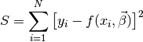
where the experimental data is expressed as 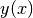 that is discretely
sampled at  points,
points,  is a model function of
some dependent data
is a model function of
some dependent data  and 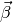, a set of parameters in the
model. As a simple example, a linear model of data would be written as
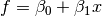. Of course, models can be arbitrary
complex. There is good statistical justification for using the
least-squares approach, and many existing tools for helping to find the
minimal values of
and 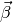, a set of parameters in the
model. As a simple example, a linear model of data would be written as
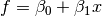. Of course, models can be arbitrary
complex. There is good statistical justification for using the
least-squares approach, and many existing tools for helping to find the
minimal values of  . These justifcations are not without criticism
or caveats, but we’ll leave that aside for now.
. These justifcations are not without criticism
or caveats, but we’ll leave that aside for now.
It is common to include a multiplicative factor to each component in the least-squares equation above, so that the different samples (or data points) might be given more or less weight. Again, there are several approaches to this, with one of the most common approaches to weight by the inverse of the estimated uncertainty in the data value. This then what is generally called the chi-square goodness-of-fit parameter
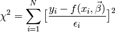
Here,  represents the uncertainty in the value of
represents the uncertainty in the value of  .
It is common to
As mentioned, the model describing 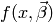 can be fairly complex.
.
It is common to
As mentioned, the model describing 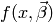 can be fairly complex.
There is an extensive literature for case where the model function depends linearly on its parameters 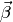 (but not necessarily linearly on a dependent variable – a quadratic function 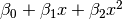 is linear in this sense). Of course, model function need not be linear in its parameters, and the minimization is generally referred to a ‘’non-linear least-squares optimization’’ in the literature. All the discussion here will assume that the models can be non-linear.
It is convenient to define the residual array  with
elements:
with
elements:
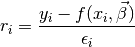
so that the sum to be minimized is a simple sum of this function,  . The fitting process can then be made very general
with a few key components required. Specifically, for Larch, the
requirements are
. The fitting process can then be made very general
with a few key components required. Specifically, for Larch, the
requirements are
1. A set of Parameters,
, that are used in the model, and are to be adjusted to find the least-square value of the sum of squares of the residual. These must be parameters (discussed below) that are held in a single parameter group. This is a regular Larch group, and so can contain other values as well.
2. An objective function to calculate the residual array. This will be a Larch function that takes the parameter group described above as its first argument, and an unlimited set of optional arguments. The arrays for the data should passed in by these optional arguments. This function should return the residual array,
Note that the use of additional data in the parameter group makes this one way to pass in data to the objective function. After the fit has completed, several statistical results describing the fit quality and the values and uncertainties found for the parameters will be written to thie parameter group. Though the description so far as been somewhat formal, the process is not as hard as it sounds, and all the topics outlined so far will be discussed in more detail below.
Because the objective function will be called by the fitting process, it needs to follow fairly strict guidelines in its inputs and outputs. Specifically, the first argument to the function must be a Larch group containing all the Parameters in the model. Furthermore, the return value of the objective function must be the fit residual array to be minimized in the least-squares sense.
We’ll jump in with a simple example fit to a line, with this script:
# create mock data for a line
dat = group(x = linspace(0, 10, 51))
dat.y = 1.0 + 2.5 * dat.x + random.normal(size=51, scale=1)
# create a group of fit parameters
params = group(off = guess(0), slope = guess(0))
init = params.off + params.slope * dat.x
# define objective function for fit residual
def fitresid(p, data):
return data.y - (p.off + p.slope * data.x)
enddef
# perform fit
minimize(fitresid, params, args=(dat,))
# create final model using best-fit values for the parameters.
final = params.off + params.slope * dat.x
Here params is the parameter group, with both params.off and params.slope as Parameters that will be adjusted in the fit. fitresid is the objective function that calculates and returns the residual array (data - model) from the values of the Parameters. The minimize() function does the actual fit, and will call the objective function many times with different (and generally improving) values for the parameters. Of course, there are faster and more statistically sound methods for determining a linear trend in a set of data, but the point of this example is to illustrate the mechanisms for doing more complex, non-linear modeling of data.